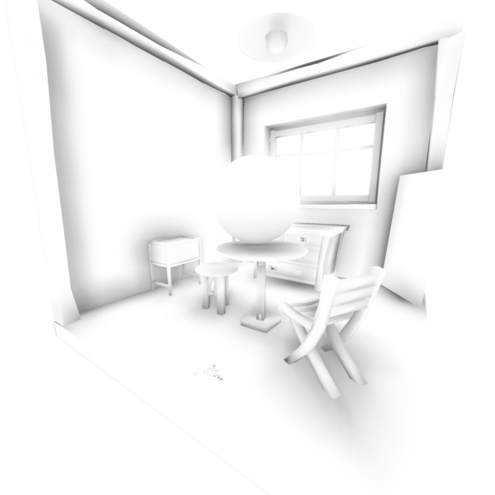
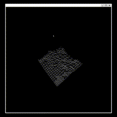
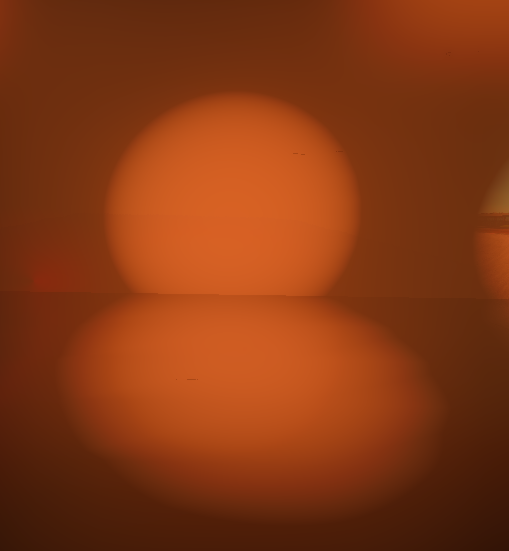
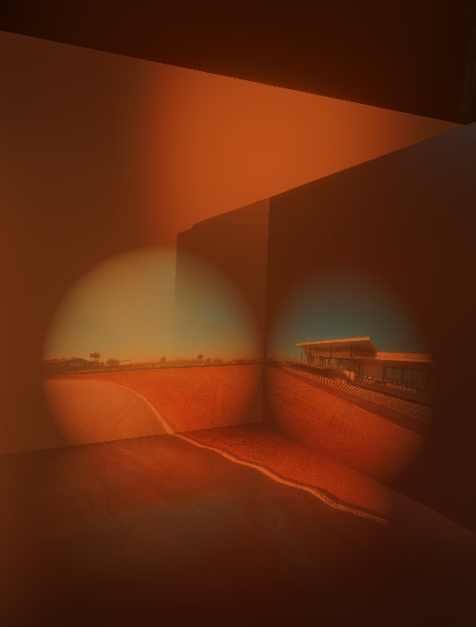
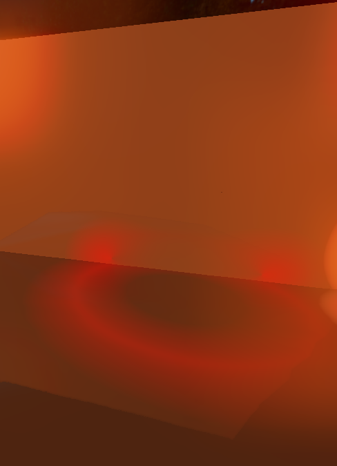
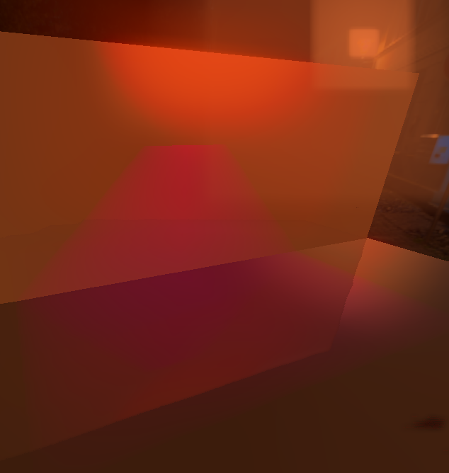
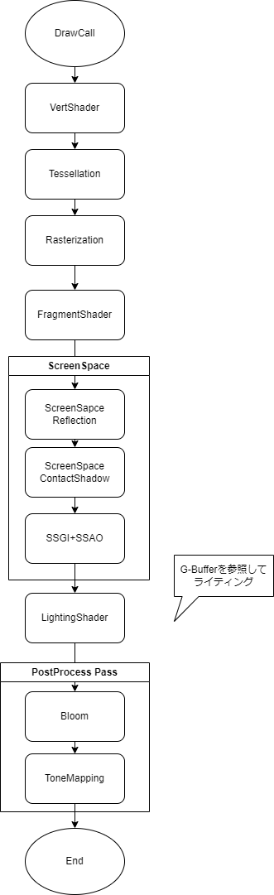

ObjRenderer + ReguEngine
Wiki
DEMOs
https://github.com/user-attachments/assets/d3723aea-6997-4102-ab67-70e1ea449652
https://github.com/user-attachments/assets/4f3b877d-1ed6-4ca4-b31a-02768c429276
This demo is in /src/Eaxmples/SphereGame. and run
./build/Regu3D scene/SphereGame.json
 |
Features
- Software Rendering(C++)
- GameEngine
Rendering Features
- Smooth Shading
- Deferred Rendering
- Image Base Lighting + HDRI BackDrop
- Tile Based Deffered Rendering
- Post Process
- Texture Sample(Albedo, Roughness, Metalic, Normal)
- Tessellation + DisplacementMap
Engine Features
- Physics
- Collisions
- Resource Manager
- I/O Manager
PostProcesses
- Screen Space Ambient Occlusion(CryTek)
- Screen Space Global Illumination
- Screen Space Reflection
- Screen Space Contact Shadow
- Screen Space Global Illumination
- Screen Space Bloom
| Effect | Result | Buffer |
|---|---|---|
| Screen Space Reflection | ||
| Screen Space Contact Shadow | ||
| Screen Space Global Illumination | ||
| Screen Space Ambient Occlusion | None |  |
| Tessllation + Displacement Map |  |  |
Lights
| Point Light | Point Projector Light | Torus Light | Box Light |
|---|---|---|---|
|  |  |  |  |
Rendering Pipeline

IO
- Obj File Reading
- Image Output
- X11 Window Output
- Customizable Vertex Shader
- Customizable Pixel Shader
- Customizable Deffered lighting pass shader
- Customizable Post Process Shader
Controls
| Common Camera Controls | Key |
|---|---|
| Camera Rotation | Mouse Movement |
| Move Forward Backward | W & S key |
| Move Right Left | D & A key |
| Move Up Down | E & Q key |
| Rendering Controls | Key |
|---|---|
| Apply Config Changes | Enter key |
| SnapShot by Cinema Mode | Space Key |
| Wire Frame Rendering Mode | 1 Key |
| Low Rendering Mode | 2 Key |
| Mid Rendering Mode | 3 Key |
| Cinema Rendering Mode | 4 Key |
| TurnTable Camera Control | Key |
|---|---|
| Cameraboom Length | Up & Down key |
Enviroment
- Ubuntu(WSL2)
Requirement
- make
- CMake
- g++(C++17)
- Eigen
- X11
- nlohmann-json3
Installation
sudo apt update
sudo apt install make -y
sudo apt install g++ -y
sudo apt install cmake -y
sudo apt install libeigen3-dev -y
sudo apt install x11-apps -y
sudo apt install libx11-dev -y
sudo apt install nlohmann-json3-dev
git clone https://github.com/regusan/ObjRenderer.git
cd ObjRenderer
Usage
cmake -S . -DCMAKE_BUILD_TYPE=Release -B build
cmake --build build -j
./build/Regu3D scene/RoomScene.json
./build/Regu3D scene/SphereGame.json
#ログ表示
xterm -e watch -n 0.1 cat resource.log &
xterm -e watch -n 0.1 cat hierarchy.log &
Customize
Scene Data
Example
{
"_comment": "シーンの定義ファイル",
"GameObjects": {
"Mesh1": {
"_comment": "メッシュの定義例",
"class": "MeshActor",
"_classExplain":"GCLASS()マクロで登録したクラス名でスポーンするクラスを指定する。",
"args": {
"_comment":"引数はargs内に記述する。args内はプログラム側から参照可能。",
"position": [
0,
0,
0
],
"rotation": [
0,
0,
0
],
"scale": [
1,
1,
1
],
"MeshPath": "models/room.obj"
}
},
"Light0": {
"_comment": "ポイントライトの定義例",
"class": "SpotLightActor",
"args": {
"position": [
0,
10,
-3
],
"rotation": [
0,
0,
-120
],
"scale": [
1,
1,
1
],
"color": [
3,
1,
3
],
"radius": 1000,
"angle": 10
}
},
"Light1": {
"_comment": "ランダムポイントライトの定義例",
"class": "RandomWalkPointLightActor",
"args": {
"position": [
0,
3,
0
],
"rotation": [
0,
0,
0
],
"scale": [
1,
1,
1
],
"color": [
1,
2,
1
],
"radius": 5
}
}
}
}
Customize Actor Example
#pragma once
#include "../Actor.hpp"
using namespace Transform;
class HogeActor : public Actor
{
protected:
Vector3f color = Vector3f(1, 0, 0);
public:
HogeActor() {}
HogeActor(json args) : Actor(args)
{
this->color.x() = args["color"][0];
this->color.y() = args["color"][1];
this->color.z() = args["color"][2];
};
~HogeActor() {};
};
// GCLASSマクロでSceneファイルから生成するための登録
GCLASS(HogeActor)
VertexShader & PixcelShader
- Define your shader {//Write own vertex transform}{//Write own pixcel shader}
- Run geometry pass RenderingPipeline::Deffered::ExecGeometryPass(model, in, gb, YourOwnVertShader, YourOwnPixcelShader);
Second Pass(Deffered Lighting Pass)
- Define your light pass shader inline const Vector3f YourOwnLightPassShader(GBuffers &gbuffers, RenderingEnvironmentParameters &environment, int x, int y){//define your light pass shaderreturn color;}Definition RenderingEnvironmentParameters.hpp:27
- Set lighting pass argment RenderingPass::ExecLightingPass(gb, YourOwnLightPassShader, in.environment);
Preparing 3D model
Blender Export settings
Credit
External Libraries Using there libraries
| Name | Usage | License |
|---|---|---|
| stb_image.h | Image Loader | Public Domain |
| stb_image_write.h | Output Rendering Result | Public Domain |
| nlohmann-json3 | Json Parser | MIT |
| Eigen | Linear Algebra | MPL2.0 |
License
Main License
This is under MIT license.